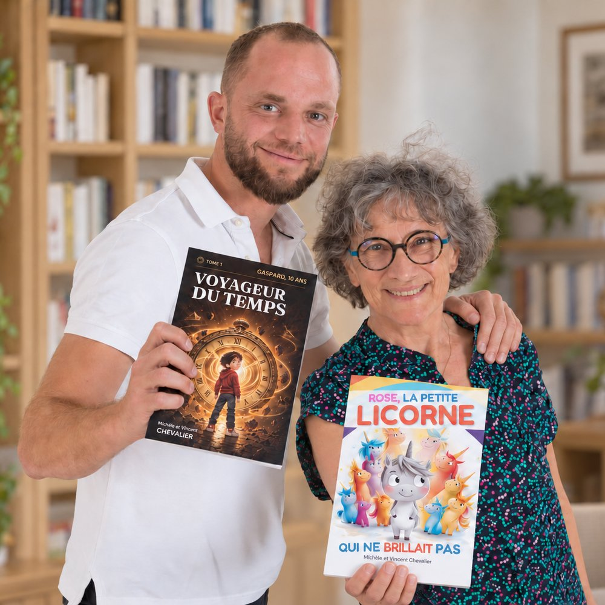

Une mère et son fils. Deux plumes, deux générations, une seule ambition : que l’enfant demande la suite.

Tout a commencé un dimanche d’hiver. Vincent racontait à ses neveux une histoire inventée à la volée : un garçon de dix ans propulsé au temps des dinosaures. Michèle, sa mère, l’écoutait : « Cette histoire, il faudrait l’écrire. » Ce soir-là, la famille Chevalier commençait sa première aventure éditoriale.
Le garçon de dix ans est devenu Gaspard, 10 ans, cinq romans de voyage dans le temps. Puis sont venus les albums tendres, les encyclopédies 100 Pourquoi et les livres pour apprendre en riant.
Chapitres courts, une illustration presque à chaque page, des héros qui doutent et se trompent. L’apprentissage vient avec le plaisir, jamais à sa place.
Nos encyclopédies et documentaires répondent à de vraies questions d’enfants, avec des réponses vérifiées et formulées pour leur âge.
Nos illustrations sont créées avec l’aide de l’intelligence artificielle, puis dirigées, retouchées et validées page par page. Pour C’est qui le plus fort ?, le texte aussi est écrit avec son aide, sous la direction de l’auteur, et chaque fait est vérifié un par un.
Imprimés à la demande, en couleurs, au format broché : c’est ce qui nous permet de les vendre sur Amazon.fr à un prix raisonnable.
Commandes groupées, exemplaires de lecture pour les classes, rencontres avec les auteurs, service de presse : écrivez à contact@editions-chevalier.fr, réponse sous 48 heures. Dossier de presse et kit visuels
Pour suivre leurs parutions : Amazon, Instagram, Facebook, TikTok et X.
Choisissez un livre : il s’ouvre aussitôt, à lire en ligne ou à télécharger en PDF. Un livre par famille.
Responsable : Famille Chevalier.
Données collectées : adresse email et livre choisi, uniquement via le formulaire du livre offert et l’inscription aux nouvelles parutions ; dans l’espace parents du jeu « L’Arène des Duels », l’adresse email du parent qui demande le champion secret.
Finalité : remise du livre choisi (lecture en ligne ou téléchargement) et, une semaine plus tard, un seul message pour vérifier qu’il vous est bien parvenu ; pour le jeu, l’envoi du code demandé ; avec votre consentement, l’annonce de nos nouvelles parutions et de nos grands rendez-vous (lancement d’un livre, opérations de Noël), quelques envois par an.
Base légale : votre consentement explicite (case à cocher).
Conservation : tant que vous êtes inscrit(e) ; suppression sur simple demande.
Partage : vos données ne sont ni vendues ni transmises à des tiers. Seuls nos prestataires techniques les traitent, pour notre compte : Google (formulaire et fichier des inscrits) et Brevo, société française qui envoie nos emails.
Mesure d’audience : les liens de nos emails (livre offert, message de vérification, annonces) sont propres à chaque destinataire. Ils nous indiquent si vous avez ouvert le livre, visité une page ou cliqué vers Amazon. Brevo ajoute à chaque email une image invisible et fait passer les liens par ses serveurs : il compte ainsi les ouvertures et les clics de façon globale, sans les relier à votre adresse. Quand vous arrivez par l’un de nos liens, votre identifiant est gardé dans votre navigateur le temps de la visite. Sur le site, nous comptons aussi les pages vues (la page et la provenance : type de site, ou nom du site d’origine s’il n’entre dans aucun type, jamais l’adresse exacte de la page) et les clics vers Amazon, sans cookie, et sans vous identifier si vous ne venez pas d’un de nos emails. Ces informations servent uniquement à mesurer l’intérêt pour nos livres et à écarter les abus ; elles ne sont jamais transmises à des tiers. Pour vous opposer à ce suivi, écrivez-nous.
Jeu « L’Arène des Duels » : le jeu ne demande rien à l’enfant (ni compte, ni prénom) et garde sa progression sur l’appareil. Pour savoir s’il plaît, il compte les ouvertures, les parties et les animaux gagnés, par type d’appareil (téléphone, tablette, ordinateur), sans cookie ni identifiant : rien ne permet de reconnaître un enfant ou un appareil. Ces compteurs, envoyés à notre script Google, sont additionnés chaque jour et servent uniquement à mesurer l’intérêt pour le jeu. L’espace parents du jeu permet de couper ce comptage (« Compter cet appareil : NON »). Le mode « chacun son téléphone » passe par un service de mise en relation (PeerJS) le temps d’une partie ; rien n’est conservé.
Vos droits : accès, rectification, suppression, opposition — en écrivant à contact@editions-chevalier.fr. Demande traitée sous 48 heures.
Éditeur du site : Famille Chevalier, activité d’édition indépendante.
Directrice éditoriale : Michèle Chevalier.
Contact : contact@editions-chevalier.fr
Hébergeur : GitHub, Inc. — 88 Colin P Kelly Jr St, San Francisco, CA 94107, États-Unis.
Propriété intellectuelle : l’ensemble du contenu de ce site (textes, illustrations, couvertures) est protégé par le droit d’auteur. Toute reproduction est interdite sans autorisation écrite.
Cookies : ce site n’utilise aucun cookie de traçage ni outil d’analyse tiers.
Droit applicable : droit français.